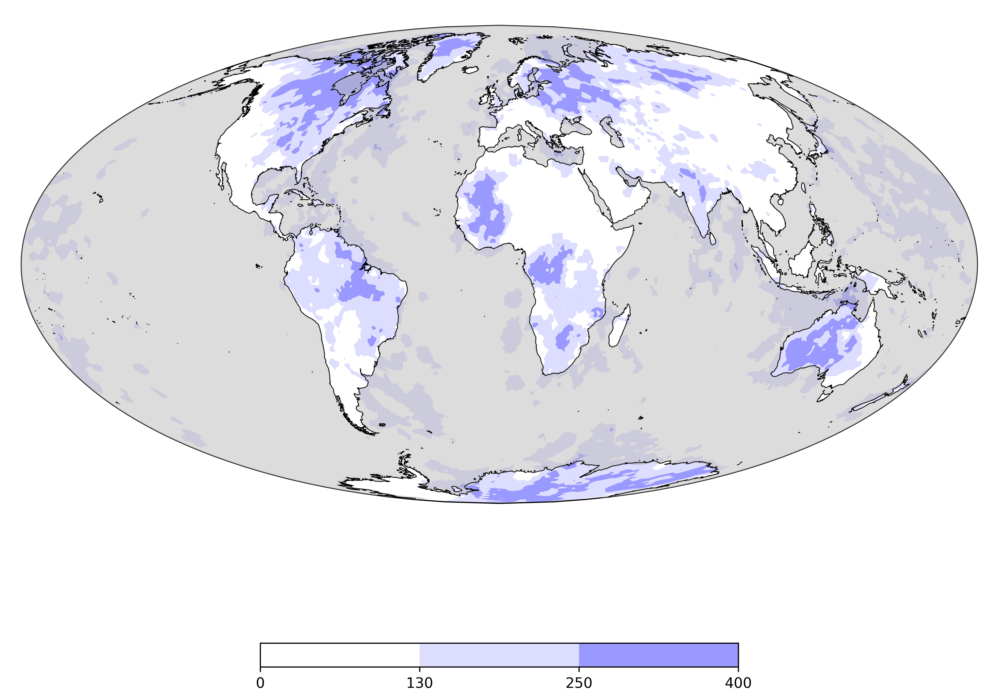

<!DOCTYPE html>
<html lang="en">
  <head>
    <meta charset="utf-8" />
    <meta name="viewport" content="width=device-width, initial-scale=1.0, maximum-scale=1.0, user-scalable=no" />

    <title>Example 2</title>
    <link rel="shortcut icon" href="./favicon.ico"/>
    <link rel="stylesheet" href="./dist/reveal.css" />
    <link rel="stylesheet" href="_assets/css/anu.css" id="theme" />
    <link rel="stylesheet" href="./css/highlight/zenburn.css" />

  </head>
  <body>
    <div class="reveal">
      <div class="slides"><section  data-markdown><script type="text/template">

# Slides

- Louis Moresi
- Australian National University
</script></section><section  data-markdown><script type="text/template">
## Slide 2

Typically, we have one or two images on a slide 



and text that explains what is going on. 
The markdown image tags are limiting but `reveal.js` has image
classes that can be used directly without too much bother:

```html

```
</script></section><section  data-markdown><script type="text/template">
## Slide 3

Animations / styling work using `reveal.js` classes 

<p class="fragment">Fade in</p>
<p class="fragment fade-out">Fade out</p>
<p class="fragment highlight-red">Highlight red</p>
<p class="fragment fade-in-then-out">Fade in, then out</p>
<p class="fragment fade-up">Slide up while fading in</p>
</script></section><section  data-markdown><script type="text/template">
## Slide 4 Math

Mathematics via *mathjax*

$$ e^{i\pi} + 1 = 0$$

With inline available ($e^{i\pi} = -1$) as well
</script></section><section ><section data-markdown><script type="text/template">
## Slide 5 Vertical slides

Reveal has vertical sub-stacks that you can divert through

 - Vertical stack 1
</script></section><section data-markdown><script type="text/template">
## Slide 5.1 Vertical slides


Reveal has vertical sub-stacks that you can divert through

 - Vertical stack 2
</script></section><section data-markdown><script type="text/template">
## Slide 5.2 Vertical slides

Reveal has vertical sub-stacks that you can divert through

 <!-- .element height="50%" width="50%" -->
</script></section></section><section  data-markdown><script type="text/template"></script></section></div>
    </div>

    <script src="./dist/reveal.js"></script>

    <script src="./plugin/markdown/markdown.js"></script>
    <script src="./plugin/highlight/highlight.js"></script>
    <script src="./plugin/zoom/zoom.js"></script>
    <script src="./plugin/notes/notes.js"></script>
    <script src="./plugin/math/math.js"></script>
    <script>
      function extend() {
        var target = {};
        for (var i = 0; i < arguments.length; i++) {
          var source = arguments[i];
          for (var key in source) {
            if (source.hasOwnProperty(key)) {
              target[key] = source[key];
            }
          }
        }
        return target;
      }

      // default options to init reveal.js
      var defaultOptions = {
        controls: true,
        progress: true,
        history: true,
        center: true,
        transition: 'default', // none/fade/slide/convex/concave/zoom
        plugins: [
          RevealMarkdown,
          RevealHighlight,
          RevealZoom,
          RevealNotes,
          RevealMath
        ]
      };

      // options from URL query string
      var queryOptions = Reveal().getQueryHash() || {};

      var options = extend(defaultOptions, {"slideNumber":true,"width":1000,"height":666,"margin":0.07}, queryOptions);
    </script>


    <script>
      Reveal.initialize(options);
    </script>
  </body>
</html>
